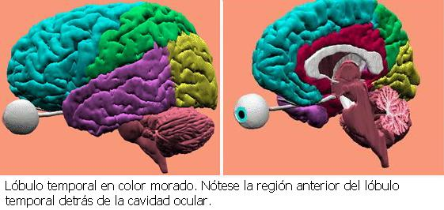

Sin duda, Elena G. de White fue una de las personas más influyentes en la historia de la Iglesia Adventista del Séptimo Día - una lideresa espiritual considerada como profeta por muchos. Setenta años han pasado desde que Elena murió en 1915, y es el propósito de esta presentación reexaminar la vida y la obra de esta excepcional mujer cristiana a la luz de los conocimientos actuales.
Elena Gould Harmon y su hermana gemela Elizabeth nacieron en Gorham, Maine, el 26 de noviembre de 1827. Sus padres, así como los ocho hijos de ellos, eran miembros devotos de la Iglesia Episcopal Metodista. De Elena y su familia escribió Jaime White:
“Ambos padres poseen resistencia física en gran medida, y los niños heredaron esta bendición, así como la actividad, la fuerza de carácter, y la capacidad ejecutiva, todas las cuales se desarrollaron especialmente en la madre. En Elena, el desarrollo tanto mental como físico fue rápido y vigoroso. Siendo aún una niña, mostró amor por el estudio, rápida percepción, y memoria retentiva. Era de naturaleza optimista y confiada, le gustaba la sociedad, era valerosa, decidida, y perseverante.” [1]
Se dijo también que “la reverencia a Dios, y el respeto por la autoridad paterna, les fueron inculcados desde temprano y con; y a los niños se les enseñó fielmente, por precepto y por ejemplo, las lecciones de integridad y diligencia que han moldeado los caracteres de muchos de los obreros más nobles en el mundo.” Tales rasgos tipificaban los valores de las devotas familias Metodistas del siglo diecinueve.
Cuando los miembros de la familia Harmon se enteraron de la conmovedora advertencia de William Miller acerca del regreso inminente de Cristo, aceptaron el mensaje con convicción profunda, “saliendo” finalmente de la Iglesia Metodista en 1843.
A la edad de nueve años, Elena se vio envuelta en un serio accidente que, dijo ella, afectó su vida entera.
“En compañía de mi hermana gemela y una de mis compañeras de clases, iba cruzando un área comunal en la ciudad de Portland, en el estado de Maine, cuando una chica como de 13 años de edad comenzó a seguirnos, amenazando con pegarnos… Íbamos corriendo a casa, pero la chica nos siguió rápidamente, con una piedra en la mano. Me volví para ver a qué distancia iba detrás de mí y, al volverme, la piedra me dio en la nariz. Experimenté una sensación enceguecedora y como de aturdimiento, y caí sin sentido. Cuando recobré el conocimiento, me encontré en la tienda de un comerciante; tenía la ropa cubierta por la sangre que manaba de mi nariz, y había un largo arroyuelo de sangre en el piso. Un amable desconocido ofreció llevarme a casa en su carruaje. Yo no sabía cuán débil estaba, y le dije que mancharía mucho su carruaje con mi sangre, y que yo podía caminar hasta mi casa. Sólo había caminado algunos pasos, cuando sentí vértigo y que me iba a desmayar. Mi hermana gemela y mi compañera de clases me llevaron a casa. No recuerdo nada de lo que pasó por un tiempo después del accidente. Mi madre dice que yo no me daba cuenta de nada, sino que permanecí en un estado de estupidez por tres semanas. … Al recobrar el conocimiento, me pareció que había estado dormida…. No era consciente del accidente, y no sabía la causa de mi enfermedad…. Me sorprendí del cambio en mi aspecto. Cada uno de los rasgos de mi rostro parecía haber cambiado…. Se notó que los huesos de mi nariz estaban rotos.” [2]
Elena dice que su padre estaba en Georgia cuando ocurrió el accidente, y que cuando él finalmente regresó a casa, no reconoció a su hija. Aparentemente, los médicos que la atendían consideraron la posibilidad de reparar los huesos rotos con alambres de plata. De acuerdo con Elena, sin embargo, decidieron no hacerlo porque su recuperación era improbable. Posiblemente, los médicos intentaron alinear manualmente los huesos rotos, pero no parece haber registro de esto. Después de recobrar el conocimiento, Elena fue confinada a su cama por muchas semanas y “quedó reducida casi a un esqueleto.” [3] Durante dos años, le fue imposible respirar por la nariz.
Resumiendo los hechos esenciales de la herida de Elena desde el punto de vista médico, encontramos lo siguiente:
A la edad de nueve años, Elena recibió una herida directa, causada por un proyectil, en el área nasal del rostro, y cayó al suelo.
Inmediatamente quedó inconsciente.
Hubo una hemorragia profusa y prolongada, y ella fue llevada a una tienda cercana.
Después de un breve intervalo consciente, ella perdió el conocimiento otra vez; esto duró como tres semanas.
Cuando recobró el conocimiento, no recordaba lo que había sucedido.
Ella notó que su rostro había quedado marcadamente deformado en ese tiempo.
Después de recobrar el conocimiento, fue confinada a su cama durante “muchas semanas” y quedó reducida “casi a un esqueleto.”
El área de la cabeza en que Elena recibió el impacto de la piedra lanzada por la muchacha de 13 años de edad contribuyó significativamente a la severidad de la herida producida. La piedra golpeó a Elena en la nariz al volver ella su cabeza para ver a qué distancia iba la muchacha que las perseguía, y Elena cayó inconsciente al suelo. Girgis ha observado que el lóbulo temporal es particularmente vulnerable a lesiones a causa de su posición baja en el cráneo detrás de la órbita del ojo. Allí el hueso del cráneo está en su parte más delgada y las heridas punzantes requieren relativamente poca fuerza para penetrar el cerebro. Landolt y de Jong también han hecho notar la fragilidad y vulnerabilidad del área temporal del cráneo, y que ésta es una de las razones por las cuales la epilepsia del lóbulo temporal es muy común. [4]
Cuando ocurre una herida en la cabeza, hay primero el peligro de que el objeto en movimiento (una piedra, en el caso de Elena) dañe la piel que recubre la cabeza y las estructuras inmediatamente debajo de ella, tales como vasos sanguíneos, nervios, y el hueso subyacente. Lo que sigue a esto es el efecto del impacto sobre el cerebro mismo, que algunas veces incluye acción destructora directa si hay fractura o hematoma.
En una así llamada herida cerrada en la cabeza, (como la que Elena aparentemente sufrió), la fuerza o impacto del objeto volante, debido a su efecto acelerador (una sacudida), lanza al cerebro contra el lado opuesto del cráneo, causando una lesión difusa en el cerebro. La cabeza de una persona, que es lanzada desde un vehículo que se mueve a gran velocidad y que se estrella contra el tronco de un árbol, estaría sujeta a la misma herida al cerebro causada por la aceleración y la desaceleración. En ambos casos, el daño resultante sería o leve o severo, dependiendo de la fuerza del impacto. En la vida civil, la mayoría de las heridas en la cabeza resultan de esta clase de heridas cerradas en la cabeza.
El largo período de inconsciencia que siguió a la herida en la cabeza de Elena, y su posterior amnesia en relación con el accidente, indican la gravedad de la lesión en el cerebro, y explican los resultados retardados del accidente. No es común que una herida en la cabeza produzca coma o inconsciencia que dure unas tres semanas. Esto generalmente sugiere una severa lesión cerebral. En un informe de 105 niños que sufrieron heridas en el cráneo seguidas por un período de inconsciencia, sólo en cuatro pacientes duró este estado más de 24 horas.
Sin embargo, pacientes que han sufrido heridas en la cabeza han permanecido inconscientes por tres semanas y todavía sobrevivieron; pero en tales casos hay casi siempre serios efectos secundarios. Pueden pasar semanas antes de que se inicie la recuperación en estos pacientes, y la mejoría es lenta, como sucedió en el caso de Elena. Esto está asociado con un período de confusión y uno de pérdida variable de la memoria en relación con lo que ocurrió - un período de amnesia. Esta amnesia puede ser permanente, o puede mejorar poco a poco hasta un grado variable. Una pérdida de la memoria por un período mayor de doce horas después del accidente es seguida frecuentemente por el desarrollo de la epilepsia. Se pueden producir ataques epilépticos poco después del accidente, o puede que la epilepsia no se manifieste por muchos años, a veces hasta veinte años más tarde. Si la herida en la cabeza ocurre en un niño, el intervalo de tiempo antes de que la epilepsia se manifieste probablemente será más largo; mientras más largo es el intervalo, más probable será que la epilepsia persista. Russell considera la amnesia post-traumática que dure más de unos pocos días como el resultado de daño cerebral severo, incluyendo el posible desgarramiento y la posible torsión de los tractos fibrosos en el cerebro. [5]
Cyril B. Courville, en aquel entonces profesor de enfermedades nerviosas en la Universidad de Loma Linda, y prominente autoridad en heridas en la cabeza, escribió lo siguiente en 1944 en relación con algunos efectos de las heridas en la cabeza:
“…la inconsciencia debida a la aplicación de fuerza a la cabeza puede persistir durante un intervalo variable, y cuando no se complica, es una indicación bastante fiable del grado de fuerza que produjo la reacción…. El cuadro clínico del coma original de corta duración que sigue a la herida en la cabeza con un consiguiente intervalo lúcido (o semilúcido), y luego una recaída en el coma, todavía es pasado por alto demasiado a menudo. Es esencial saber que el período original de coma es el resultado de la “conmoción.” El paciente se recupera de su experiencia más o menos completamente porque la herida causante no es generalmente severa (excepción: contusión general del lóbulo temporal, en cuyo caso hay sólo recuperación parcial del coma profundo). La recaída en el coma es causada por la creciente presión intracraneal debida a una acumulación de coágulos sanguíneos intracerebrales fuera y por debajo de la duramadre, al edema del lóbulo temporal, la acumulación progresiva de fluido cerebroespinal por debajo de la duramadre, o al progresivo suavizamiento (e hinchazón) del cerebro a partir de una trombosis arterial.” [6]
Courville dijo más tarde que “la duración del período de inconsciencia es un indicador razonable de la severidad de la contusión.” Especificó que la inconsciencia por un período de más de seis horas sugiere la posibilidad de que estén presentes “lesiones generalizadas en el cerebro, así como fracturas del cráneo.” Tales pacientes pueden sobrevivir o morir, dependiendo de la severidad de estos síntomas asociados.” [7] [8].
Courville también ha señalado que una lesión en el lóbulo temporal es la causa esencial de la epilepsia psicomotora (un tipo de epilepsia del lóbulo temporal). [9] En una serie de cincuenta y cuatro casos de epilepsia psicomotora, encontró que en el 37 por ciento (veinte casos), la herida era la causa más probable. [10] Después de la recuperación de una inconsciencia prolongada, generalmente sólo hay una lenta mejoría de la amnesia (pérdida de la memoria), y sólo un tercio de los pacientes experimentan una recuperación completa. [11] [12] .
En 1975, Jennett dijo que “la pérdida del conocimiento, o hasta una breve amnesia después de una herida, siempre implica daño cerebral…. Pero la severidad del daño cerebral difuso… se juzga mejor por la duración de la amnesia post-traumática.” En una serie de 800 casos de heridas en la cabeza estudiadas por Jennett, como el 40 por ciento de los que experimentaron una amnesia post-traumática de 24 horas o más, desarrollaron epilepsia posterior. [13] Si Jennett llegó a la conclusión de que hay un 40 por ciento de probabilidades de que un paciente desarrolle epilepsia después de que una herida en la cabeza resulte en una inconsciencia de 24 horas o más, ¡cuánto mayor serán las probabilidades de que Elena desarrollara epilepsia puesto que ella estuvo inconsciente por tres semanas y amnésica durante todo el incidente!
Basado en el estudio de resultados posteriores de heridas en la cabeza en las fuerzas armadas, Caveness resumió sus hallazgos como sigue:
“El síndrome post-traumático, las secuelas [resultado] más comunes que se desarrollan a partir del trauma craneocerebral, se caracterizan generalmente por las siguientes dolencias: dolor de cabeza, vértigo y mareos, nerviosismo, irritabilidad, memoria deteriorada, incapacidad para concentrarse, fatiga excesiva, dificultad para dormir… Otros atributos incluyen una sensación de malestar y disminución de la capacidad para ganarse la vida.”
De un grupo de 574 pacientes que sufrieron heridas en la cabeza, el 46 por ciento desarrollaron ataques epilépticos. [14] La memoria disminuida, el nerviosismo, la incapacidad para concentrarse, y la fatiga excesiva fueron todos síntomas que Elena G. de White tuvo por varios años después de su herida en la cabeza. De todos los ataques en adultos que incluyen “automatismo de la conducta, desórdenes de la personalidad y el pensamiento, y disturbios visuales,” [15] más del 50 por ciento se deben quizás a que el lóbulo temporal ha sido afectado.” [16]
En otro estudio de 481 casos de la así llamada epilepsia después de heridas en la cabeza, Jennett encontró que la epilepsia del lóbulo temporal se desarrolló en 90 casos. Averiguó que el 53 por ciento de los pacientes sufrían de uno a seis ataques cada año, pero que el 18 por ciento tenían más de uno por mes. [17]
La epilepsia, como entidad, ha sido reconocida hasta cierto grado desde los días del antiguo Egipto, pero no fue sino con Hipócrates (400 A.C.) y Galeno (+ 175 D. C.) que comenzó a acumularse algún conocimiento organizado de esta enfermedad.
Durante el siglo diecinueve, se diferenció gradualmente entre varias clases de epilepsia, más allá de los tipos severo [grand mal] y benigno [petit mal], y estos análisis comparativos han continuado. Fue Hughlings Jackson en Inglaterra quien en 1888 informó de unos cincuenta casos de epilepsia que tenían, como parte de su complejo de síntomas, un “estado de ensueño” o “aura intelectual” que precedía a ataques generalizados, o que ocurrían sin un ataque pleno. [18]
Durante el resto del siglo diecinueve, hubo un sostenido pero lento aumento en el conocimiento de lesiones cerebrales y la resultante epilepsia. Durante las dos guerras mundiales, ocurrió un gran número de lesiones cerebrales y en la cabeza. Fue posible seguir de cerca a muchos de los heridos por cierto número de años, aumentando grandemente el conocimiento sobre los efectos posteriores o retardados de estas lesiones. De los casos en los cuales se sufrieron heridas a la cabeza por proyectiles (en ambas guerras mundiales y en la guerra de Corea), más de un tercio de las víctimas desarrollaron epilepsia. Muchas lesiones en la cabeza que fueron seguidas por ataques epilépticos ahora resultan de accidentes industriales y de tráfico.
Con el desarrollo, en 1929, del electroencefalógrafo para registrar la actividad eléctrica del cerebro, la visualización mejorada por rayos X del cerebro y el cráneo (incluyendo la exploración por TAC [tomografía axial computarizada] para buscar variaciones en la estructura anatómica, la tomografía PET, que indica los cambios funcionales en áreas precisas, y, más recientemente, la obtención de imágenes por resonancia magnética [RM], se estableció una base más firme para el estudio y la detección de funciones anormales y defectos del cerebro; resultando también en una comprensión progresivamente mejor de los varios tipos de epilepsia y otras disfunciones cerebrales.

Existen numerosas causas de la epilepsia, incluyendo predisposición hereditaria, lesiones durante el nacimiento, lesiones postnatales en la cabeza, meningitis y otras infecciones, tumores, anormalidades metabólicas, enfermedades vasculares, e intoxicación. El tipo más común de epilepsia es la epilepsia del lóbulo temporal, y la causa más común de ella son las lesiones en la cabeza.
Referencias:
Volver a la sección Examinando las religiones
Comentarios
Comments powered by Disqus